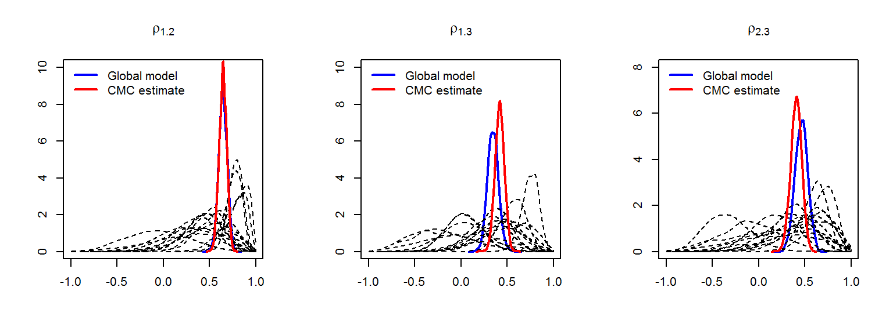

Section 3: M-models for spatial multivariate disease mapping
Author
Aritz Adin
Published
Jun 27, 2024
In the previous lab session, we show how to fit spatial Poisson mixed models for high-dimensional areal data using the R package bigDM. Here, we describe how to use this package to fit order-free multivariate scalable Bayesian models to smooth mortality (or incidence) risks of several diseases simultaneously Vicente et al, (2023).
The MCAR_INLA() function
This function allows fitting (scalable) spatial multivariate Poisson mixed models to areal count data, where dependence between spatial patterns of the diseases is addressed through the use of M-model (Botella-Rocamora et al., 2015).
where \(\alpha_j\) is a disease-specific intercept and \(\theta_{ij}\) is the spatial main effect of area \(i\) for the \(j\)-th disease.
We rearrange the spatial effects into the matrix \(\Theta=\lbrace \theta_{ij}: \, i=1, \ldots, n; \, j=1, \ldots, J \rbrace\) to better comprehend the dependence structure. The main advantage of the multivariate modelling is that dependence between the spatial patterns of the different diseases can be included in the model, so that latent associations between diseases can help to discover potential risk factors related to the phenomena under study. These unknown connections can be crucial to a better understanding of complex diseases such as cancer.
The potential association between the spatial patterns of the different diseases are included in the model considering the decomposition of \(\Theta\) as
\[\begin{equation}
\Theta = \Phi M,
\end{equation}\]
where \(\Phi\) and \(M\) deal with dependency within-diseases and between-diseases, respectively. In the following, we briefly describe the two components of the M-model.
The matrix \(\Phi\) is a matrix of order \(n \times K\) and it is composed of stochastically independent columns that are distributed following a spatially correlated distribution. Usually, as many spatial distributions as diseases are considered, that is, \(K=J\). Several CAR prior distributions can be specified to deal with spatial dependence within-diseases, such as the intrinsic CAR prior, the Leroux CAR prior, and the proper CAR prior distribution.
On the other hand, \(M\) is a \(K \times J\) nonsingular but arbitrary matrix and it is responsible for inducing dependence between the different columns of \(\Theta\), i.e., for inducing correlation between the spatial patterns of the diseases. Note that, assigning \(N(0,\sigma)\) priors to the cells of \(M\) is equivalent to assigning a Wishart prior to \(M'M\), i.e., \(M'M \sim Wishart(J, \sigma^{2} \mathbf{I}_J)\).
Once the between-diseases dependencies are incorporated into the model, the resulting prior distributions for \(\mbox{vec} \left( \Theta \right)\) with Gaussian kernel has a precision matrix given by
Recall that this precision matrix accounts for both within and between-disease dependencies. If \(\Omega_{1} = \ldots = \Omega_{J}= \Omega_{w}\), the covariance structure is separable and can be expressed as \(\Omega_{\mbox{vec}(\Theta)}^{-1}=\Omega_{b}^{-1} \otimes \Omega_{w}^{-1}\), where \(\Omega_{b}^{-1}=M'M\) and \(\Omega_{w}^{-1}\) are the between- and within-disease covariance matrices, respectively.
Notes:
As for the spatial prior distributions for univariate models (single disease), appropriate sum-to-zero constraints must be imposed to address identifiability issues with the disease-specific intercepts.
The M-model implementation of these models using R-INLA requires the use of at least \(J \times (J+1)/2\) hyperparameters. So, the results must be carefully checked, specially when using the Leroux or proper CAR priors.
Main input arguments
What follows is a brief description of the main input arguments and functionalities of the MCAR_INLA() function:
carto: object of class sf or SpatialPolygonsDataFrame. This object must contain at least the variable with the identifiers of the spatial areal units specified in the argument ID.area.
data: object of class data.frema that must contain the target variables of interest specified in the arguments ID.area, ID.disease, O and E.
ID.area: character; name of the variable that contains the IDs of spatial areal units.
ID.disease: character; name of the variable that contains the IDs of the diseases.
ID.group: character; name of the variable that contains the IDs of the spatial partition (grouping variable). Only required if model="partition".
O: character; name of the variable that contains the observed number of cases for each areal unit and disease.
E: character; name of the variable that contains either the expected number of cases for each areal unit and disease.
W: optional argument with the binary adjacency matrix of the spatial areal units. If NULL (default), this object is computed from the carto argument (two areas are considered as neighbours if they share a common border).
prior: one of either "intrinsic" (default), "Leroux", "proper" or "iid", which specifies the prior distribution considered for the spatial random effects.
model: one of either "global" or "partition" (default), which specifies the Global model or one of the scalable model proposal’s (Disjoint model and k-order neighbourhood model, respectively).
k: numeric value with the neighbourhood order used for the partition model. Usually k=2 or 3 is enough to get good results. If k=0 (default) the Disjoint model is considered. Only required if model="partition".
compute.DIC: logical value; if TRUE (default) then approximate values of the Deviance Information Criterion (DIC) and Watanabe-Akaike Information Criterion (WAIC) are computed.
compute.fitted.values: logical value (default FALSE); if TRUE transforms the posterior marginal distribution of the linear predictor to the exponential scale (risks or rates).
inla.mode: one of either "classic" (default) or "compact", which specifies the approximation method used by INLA. See help(inla) for further details.
For further details, please refer to the reference manual and the vignettes accompanying this package.
Example: joint analysis of lung, colorectal and stomach cancer mortality
Simulated data for lung, colorectal and stomach cancer mortality in the 7907 municipalities of mainland Spain (excluding Baleareas and Canary Islands, and the autonomous cities of Ceuta and Melilla) included in the Data_MultiCancer object will be used for illustration.
library(bigDM)library(INLA)
Cargando paquete requerido: Matrix
Cargando paquete requerido: sp
This is INLA_24.05.10 built 2024-05-10 19:59:04 UTC.
- See www.r-inla.org/contact-us for how to get help.
- List available models/likelihoods/etc with inla.list.models()
- Use inla.doc(<NAME>) to access documentation
library(sf)
Linking to GEOS 3.12.1, GDAL 3.8.4, PROJ 9.3.1; sf_use_s2() is TRUE
library(tmap)
Breaking News: tmap 3.x is retiring. Please test v4, e.g. with
remotes::install_github('r-tmap/tmap')
STEP 1: Pre-processing data
STEP 2: Fitting global model with INLA (this may take a while...)
summary(iCAR.Global)
Time used:
Pre = 1.2, Running = 154, Post = 6.89, Total = 162
Fixed effects:
mean sd 0.025quant 0.5quant 0.975quant mode kld
I1 -0.146 0.006 -0.157 -0.146 -0.134 -0.146 0
I2 -0.053 0.006 -0.066 -0.053 -0.040 -0.053 0
I3 0.017 0.010 -0.003 0.017 0.037 0.017 0
Random effects:
Name Model
idx RGeneric2
Model hyperparameters:
mean sd 0.025quant 0.5quant 0.975quant mode
Theta1 for idx -1.291 0.032 -1.352 -1.292 -1.225 -1.296
Theta2 for idx -1.980 0.077 -2.127 -1.982 -1.823 -1.989
Theta3 for idx -1.361 0.066 -1.494 -1.360 -1.234 -1.355
Theta4 for idx 0.118 0.010 0.097 0.118 0.138 0.118
Theta5 for idx 0.102 0.018 0.068 0.101 0.138 0.100
Theta6 for idx 0.091 0.026 0.041 0.091 0.143 0.090
Deviance Information Criterion (DIC) ...............: 79473.18
Deviance Information Criterion (DIC, saturated) ....: 25158.18
Effective number of parameters .....................: 1704.38
Watanabe-Akaike information criterion (WAIC) ...: 79386.32
Effective number of parameters .................: 1392.98
Marginal log-Likelihood: -40196.40
CPO, PIT is computed
Posterior summaries for the linear predictor and the fitted values are computed
(Posterior marginals needs also 'control.compute=list(return.marginals.predictor=TRUE)')
Posterior estimates of between-disease correlations and variance parameters
In addition to enlarge the effective sample size and improving smoothing by borrowing information from the different responses, one of the main advantages of multivariate disease mapping models is that they take into account correlations between the spatial patterns of the different diseases \({\rho}=(\rho_{12},\rho_{13},\rho_{23})^{'}\), that is, they reveal connections between diseases. In addition, it also provides the diagonal elements of the between-disease covariance matrix (\(\sigma^2_j\)), hereafter referred to as variance parameters, which control the amount of smoothing within diseases.
The marginal posterior estimates of these parameters are computed by first sampling from the approximated joint posterior distribution of the model hyperparameters using the inla.hyperpar.sample() function. Then, kernel density estimates of the derived samples for the elements of the correlation matrix of the random effects are computed. The results, including summary statistics and posterior marginal densities, are contained in the summary.cor/summary.var and marginals.cor/marginals.var elements of the inla model
## Posterior estimates of between-disease correlations ##iCAR.Global$summary.cor
Again, we propose to divide the data into the \(D=15\) Autonomous Regions of Spain (region variable of the Carto_SpainMUN object). The disjoint and 1st-order neighbourhood model with an iCAR prior distribution are fitted using the MCAR_INLA() function as:
STEP 1: Pre-processing data
STEP 2: Fitting partition (k=0) model with INLA
+ Model 1 of 15
+ Model 2 of 15
+ Model 3 of 15
+ Model 4 of 15
+ Model 5 of 15
+ Model 6 of 15
+ Model 7 of 15
+ Model 8 of 15
+ Model 9 of 15
+ Model 10 of 15
+ Model 11 of 15
+ Model 12 of 15
+ Model 13 of 15
+ Model 14 of 15
+ Model 15 of 15
STEP 3: Merging the results
STEP 1: Pre-processing data
STEP 2: Fitting partition (k=1) model with INLA
+ Model 1 of 15
+ Model 2 of 15
+ Model 3 of 15
+ Model 4 of 15
+ Model 5 of 15
+ Model 6 of 15
+ Model 7 of 15
+ Model 8 of 15
+ Model 9 of 15
+ Model 10 of 15
+ Model 11 of 15
+ Model 12 of 15
+ Model 13 of 15
+ Model 14 of 15
+ Model 15 of 15
STEP 3: Merging the results
Compare the results
library(RColorBrewer)## Carto object of the Spanish provinces carto.CCAA <-aggregate(Carto_SpainMUN[,"geometry"],list(ID.group=st_drop_geometry(Carto_SpainMUN)$region), head)## Model selection criteriacompare.DIC <-function(x){data.frame(mean.deviance=x$dic$mean.deviance, p.eff=x$dic$p.eff,DIC=x$dic$dic, WAIC=x$waic$waic,time=x$cpu.used["Total"])}MODELS <-list(Global=iCAR.Global, k0=iCAR.k0, k1=iCAR.k1)do.call(rbind,lapply(MODELS, compare.DIC))
mean sd 0.025quant 0.5quant 0.975quant
Global 0.4620566 0.07009235 0.3191077 0.464104 0.5982320
k1-CMC 0.4096088 0.06058028 0.2865981 0.410635 0.5261654

Maps of posterior medians of between-disease correlations for the different subdivisions obtained with the 1st-order neighbourhood partition model. Correlations between lung and colorectal cancer are displayed on the left (\(\rho_{1,2}\)), the central map displays the correlations between lung and stomach cancer (\(\rho_{1,3}\)) and the map on the right displays the correlation between colorectal and stomach cancer (\(\rho_{2,3}\)).